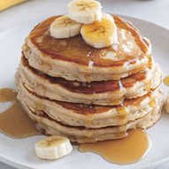
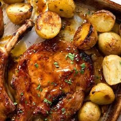

Healthy Meals
Breakfast Burrito

Benefits
Breakfast burritos can be healthy based on how you customize it. They are packed with protein and fibre. Very convenient for busy mornings as they are a pack and go. Weight loss, good digestion, improves metabolism.
Ingredients
- Flour Tortillas
- Scrambled Eggs
- Spicy Potatoes
- Avocado
- Pico De Gallo
- Shredded Cabbage
Recipe
- Lay the fillings in a narrow strip across your 30 cm tortilla.
- Tuck the sides, then fold the tortilla over the fillings till it's closed.
- Make sure to press the fillings tightly together so that the tortilla is compact.
Protein Pancakes With Banana

Benefits
They're lower in carbohydrates and higher in protein. Source for vitamin C and potassium. Good for digestion.
Ingredients
- 3 tbsp Protein Powder
- 2 Eggs
- 1 Banana
- Blender
- Pan
- Butter
Recipe
- Peel banana
- Add banana, cracked eggs and protein powder into a blender.
- Blend until thick pourable batter. If too stiff, pour water. If it's too runny, add protein powder.
- Pour batter into a buttered fry pan on medium heat.
- Fry each side until golden brown.
Oven-baked Pork Chops

Benefits
Rich source of selenium, vitamins and minerals.
Ingredients
- 1kg Potatoes
- 4 tbsp olive Oil
- 6 Garlic Cloves
- Small Handful Thyme
- 6 tbsp Honey
- 6 tbsp Wholegrain Mustard
- 4 thick-cut bone-in Pork Chops
Recipe
- Heat oven to 200°C
- Toss the potatoes, oil, garlic and thyme on a shallow roasting tray and mix
- Roast for 25 mins until the potatoes are just turning tender when cut with knife
- Whisk the honey and mustard together in a small bowl
- Season the pork chops with salt and pepper, then brush with half the marinade
- Mix with potatoes and bake for another 10 mins before turning the chops
- Continue to bake for 10 more mins until cooked through
Chicken Pot Pie

Benefits
Great for meal prep, made ahead and frozen for later. Niacin (providing energy for cells), vitamin A and C.
Ingredients
- 2 Tbsp Vegetable Oil
- 8-10 Skinless Boneless Chicken Thighs
- 2 Celery Sticks Finely Chopped
- 2 Onions Finely Chopped
- 2 Carrots
- 50g Butter
- 50g Plain Flour
- 500ml Milk
- 1 Chicken Stock Cube
- 1 Tbsp Dijon Mustard
- Bunch Of Thyme
- 1 Egg Beaten
- 375g Sheet Ready-Rolled Puff Pastry
Recipe
- Heat 1 tbsp vegetable oil in a deep frying pan over a high heat
- Once hot, brown half the chicken pieces on both sides, season and transfer to a plate
- Reduce the heat to medium and heat the remaining oil in the pan
- Fry the onions, celery and carrots for 8-10 mins, stirring occasionally
- Put that info the plate with the chicken
- Return the pan to a medium heat
- Melt the butter in the pan and stir in the flour to make a paste, stir till golden brown
- Slowly add the milk, then whisk to combine
- Continue until you have a smooth, creamy sauce
- Crumble the stock cube into the sauce and add 250ml water
- Put the heat on low then return the chicken and veg to the pan
- Stir in the mustard and thyme, and season
- Cover with lid for 20 minutes occasionally stirring
- Heat the oven to 200C and shred the chicken
- Transfer the filling to a pie dish, open the pastry and lay it over the top of the dish
- Bake for 35-40 mins until the pastry is golden brown and the filling is bubbling